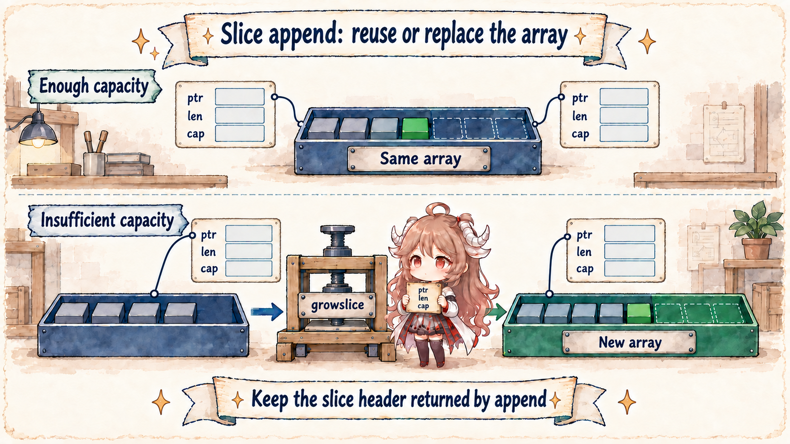
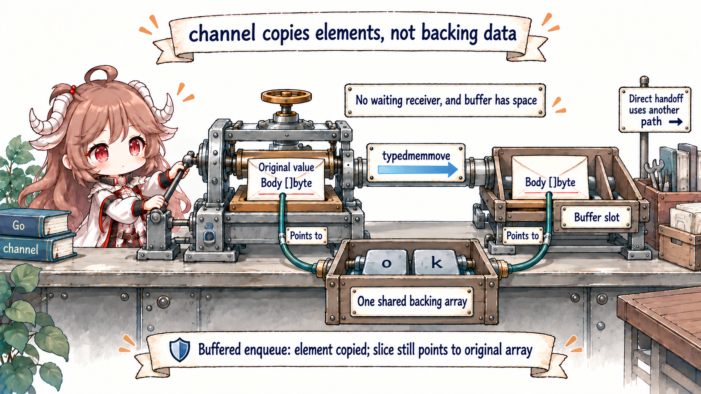
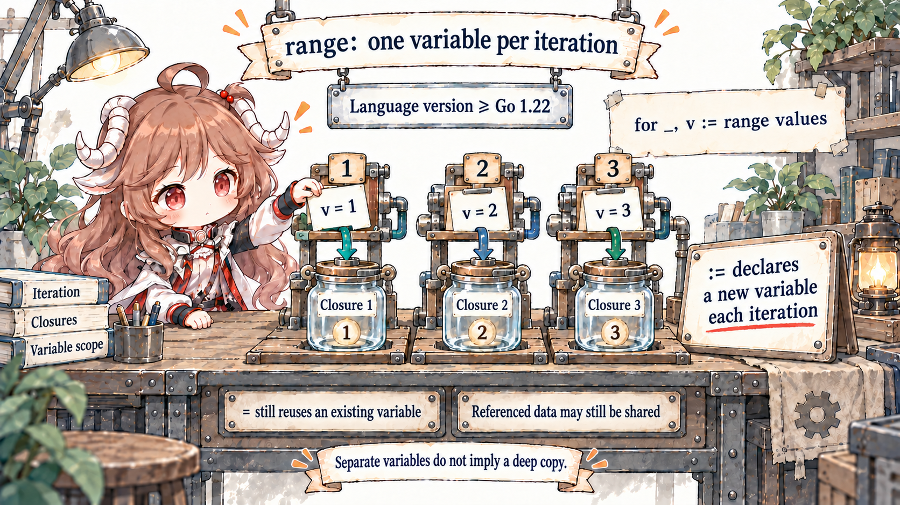

Reading goal: you do not need to know a slice's internal layout. Whenever you see an assignment, argument, return, or channel send, learn to ask two questions: what value was copied here, and does that copy still point to the same underlying data?
We will build intuition with runnable code, then confirm it with three evidence layers. Semantics come from the Go specification sections on
representation of values, slice types, and
for statements. Implementation claims are pinned to the
Go 1.26.0 tag. Observable behavior is captured by the repository's
value-semantics tests.
Runtime layouts explain this version; they are not a promise that application code should access them through unsafe.
1. Start with a Copy That Still Changes the Original
a := []int{10, 20}
b := a
b[0] = 99
fmt.Println(a) // [99 20]
fmt.Println(b) // [99 20]
b := a really does copy something, but it copies a small instruction card: where the elements begin, how many
are currently visible, and how much room is available. At first, both cards point to the same row of elements, so a
change made through either card is visible through the other. Copying the card is not copying the warehouse it names.
That is the useful meaning of “Go only passes by value.” Assignment, arguments, returns, and channel sends all transfer values, but a value is not necessarily an entire object graph. The specification distinguishes self-contained values such as booleans, numbers, arrays, and structs from non-nil pointer, function, slice, map, and channel values that contain references to underlying data. An interface depends on its dynamic value.
| Static shape | Immediate copy | May remain shared | First question |
|---|---|---|---|
int, bool | The scalar | Nothing | No alias to follow |
| Array, struct | The full array/struct value | References inside fields | Recurse into fields |
string | The string value | Immutable byte sequence | Did slicing/conversion allocate? |
slice | Pointer, length, capacity | Backing array | Range and capacity |
map, channel | A value referring to runtime state | The same map/channel | Who may mutate and how access is synchronized |
interface | Dynamic type and data | Depends on dynamic value | Inspect both parts |
The table compresses those two questions. Even “the struct is copied in full” is not a deep-copy guarantee. If the struct contains a []byte, the struct and slice header are copied;
both headers may still point at one array. Expand the representation one layer at a time instead of labeling only the outer type.
Keep one test in mind: the variable itself is copied, but if it contains directions to other data,
the copy may still reach that same data. We will run this test through fetchd's slice, append,
and result channel before returning to runtime names.
2. Find Every Copy in fetchd
The handler from Chapter I is small, yet it contains four useful handoffs: a query returns a URL slice; range gives a string value to each goroutine;
a worker sends a fetchResult through a channel; and the collector appends received elements to a result slice.
targets := r.URL.Query()["url"]
results := make(chan fetchResult, len(targets))
for _, target := range targets {
go h.fetch(ctx, target, results)
}
batch := make([]fetchResult, 0, len(targets))
for range targets {
batch = append(batch, <-results)
}
This is not one reference flowing unchanged. targets is a slice value; each target is a string value; the goroutine call gets another string value;
the channel copies a fetchResult; and append writes the received element into the batch backing array. Values are copied at every handoff, while isolation depends on their representations.
3. Slices: Copy the Triple, Share the Backing Array
The specification describes a slice as a descriptor for a contiguous segment of an underlying array, with a length and capacity. The current runtime writes that model as three internal fields:
// src/runtime/slice.go
type slice struct {
array unsafe.Pointer
len int
cap int
}
After b := a, b has its own triple. Reslicing b does not change a.len. Initially, however, both array
fields match, so indexed writes pass through different headers into the same array.
original := make([]string, 2, 4)
copyOfHeader := original
copyOfHeader[0] = "changed" // original[0] changes too
copyOfHeader = append(copyOfHeader, "gamma")
len(original) == 2 // each header owns its len
original[:3][2] == "gamma" // append still wrote into shared storage
Why append's result must be assigned
append returns a new slice value. With spare capacity it still addresses the old array. When newLen > oldCap, compiler-generated code enters
runtime.growslice. The caller must write s = append(s, x): the returned header owns the new length even without growth, and owns the new pointer when growth occurs.
Walk one growth through growslice
func growslice(oldPtr unsafe.Pointer, newLen, oldCap, num int, et *_type) slice {
oldLen := newLen - num
newcap := nextslicecap(newLen, oldCap)
// Compute capmem by element size and reject overflow.
p := mallocgc(capmem, et, true)
memmove(p, oldPtr, lenmem)
return slice{p, newLen, newcap}
}
The real path also separates pointer-bearing elements, runs race/msan/asan hooks, applies write barriers, and rounds allocator size classes.
nextslicecap tends to double small slices and transitions smoothly toward roughly 1.25× for larger ones, but element size and allocator rounding affect the result.
The growth formula is an implementation detail; the Go language does not guarantee that ratio.
Alias bugs usually come from unclear mutation rules
A function receiving []T gets a header copy. It can update elements in the shared range; local reslicing or appending does not update the caller's header.
If an API needs data that later caller mutations cannot change, clone with append([]T(nil), input...) or slices.Clone. If it only reads during the call, define who may mutate and whether the callee may retain the value afterward.
4. Follow Three More Sharing Cases
4.1 A Channel Send Copies the Element, Not an Object Graph
results <- result sends one fetchResult value. On the buffered fast path, chansend locates a ring-buffer slot and calls
typedmemmove to copy the element into it:
// Suppose a future result adds a []byte field.
type payloadResult struct{ Body []byte }
payloads := make(chan payloadResult, 1)
body := []byte("ok")
payloads <- payloadResult{Body: body}
body[0] = 'N'
got := <-payloads
fmt.Println(string(got.Body)) // "Nk"
The channel copied payloadResult, including its slice instruction card, but both cards still point to the same
bytes. Mutating body after the send is therefore visible to the receiver. The source below explains only how
this element-value copy reaches the buffer.
if c.qcount < c.dataqsiz {
qp := chanbuf(c, c.sendx)
typedmemmove(c.elemtype, qp, ep)
c.sendx++
c.qcount++
unlock(&c.lock)
return true
}memmove in sendDirect.

Today's fetchResult contains strings and integer fields. Reassigning the sender's result.Status after the send cannot rewrite the buffered copy.
If a future version adds Body []byte, however, the channel copies the struct and slice header; mutations to Body elements may race with the receiver.
A rule that “the sender stops mutating after send” is an agreement between both sides, not an automatic runtime deep copy.
4.2 Maps and Interfaces: Follow Dynamic State
Map assignment shares one map
The specification defines a map value as a reference to an implementation-specific structure. second := first copies the map value, so both names address one map.
Updating through either is visible through the other. Copying a map variable is neither a snapshot nor synchronization; concurrent sharing still needs a mutex, one goroutine that performs all writes, or immutable publication.
An interface nil has both a type and data question
Go 1.26 represents a non-empty interface as tab + data and an empty interface as _type + data. This explains a typed nil:
after (*fetchResult)(nil) enters any, data may be nil while the dynamic type remains *fetchResult, so the interface itself is not nil.
type iface struct {
tab *itab
data unsafe.Pointer
}
type eface struct {
_type *_type
data unsafe.Pointer
}var pointer *fetchResult
var value any = pointer
value == nil // false: a dynamic type is present
typed, ok := value.(*fetchResult)
ok && typed == nil // true4.3 Go 1.22+ Range Variables: One Old Trap Changed
fetchd launches goroutines inside for _, target := range targets. Since Go 1.22, iteration variables declared by a range clause with
:= are new variables for each iteration. This module declares go 1.26.0, so the closures capture distinct target variables; the historical
target := target patch is unnecessary here.

Two caveats remain. Variables declared before the loop and assigned with = are reused. And a fresh iteration variable is not a deep copy:
ranging over [][]byte yields distinct slice variables that may still address overlapping arrays. The language change repairs variable capture; it does not decide who may mutate those arrays.
5. Turn “Copy” into Runnable Experiments
The repository test file separates six observations that are often conflated:
| Test | Controlled condition | Proves | Does not prove |
|---|---|---|---|
TestSliceHeaderCopySharesBackingArray | Spare capacity | Independent headers, shared array | Every append shares |
TestAppendMaySplitBackingArray | Capacity exhausted | Growth can separate arrays | A fixed growth ratio |
TestChannelSendCopiesElementValue | Buffered channel | Struct copy, shallow slice field | The sender automatically stops mutating |
TestMapAssignmentSharesState | One map value | Updates are shared | Concurrent safety |
TestInterfaceHoldingTypedNilIsNotNil | Typed nil pointer | Interface is non-nil with a type | Stable reflection internals |
TestRangeVariablesArePerIteration | Go 1.26 and := | Distinct iteration variables | No nested aliases |
cd go-runtime/examples/fetchd
go test ./...
go test -race ./...
go vet ./...A clean race run does not prove that shared mutation is designed correctly; these tests create sharing sequentially. If slice-element reads and writes move to different goroutines without a happens-before edge, the race detector can then report the conflict. The lab's job is to separate byte copying from state sharing.
6. Derive API Rules from Value Semantics
- State whether parameters are retained. Do not retain data promised as call-only; clone data that must outlive the call and expose the cost.
- Document mutability of returned slices and maps. Exposing an internal collection lets the caller modify the same data; copy or offer operations when needed.
- Audit channel messages recursively. A struct-by-value message does not deep-copy mutable slice, map, or pointer fields.
- Always keep the result of append. Do not depend on spare capacity or a runtime growth ratio.
- Read range semantics with the module version. Check
go.modand:=versus=before diagnosing captures.
Keep one reusable question set: What immediate value is copied here? Which references live inside it? What do they reach? Who may mutate that state, for how long, under which synchronization?
Chapter III is now available and applies the same discipline to goroutines: instead of calling one a “lightweight thread,” it follows
newproc → runq → schedule → execute to show when work becomes runnable, where it runs, and where runnable latency comes from.
Source and Documentation References
- Go Language Specification: Representation of values
- Go Language Specification: Slice types
- Go Language Specification: For statements
- Go Slices: usage and internals
- Arrays, slices (and strings): The mechanics of append
- Fixing For Loops in Go 1.22
- runtime.slice
- runtime.growslice
- runtime.nextslicecap
- runtime.chansend
- runtime.sendDirect
- runtime interface layouts
- Runnable fetchd example